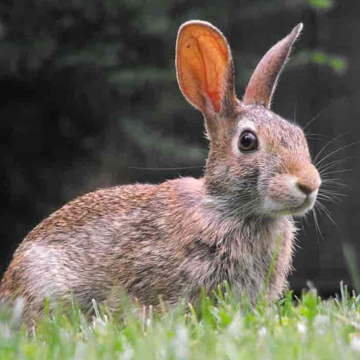
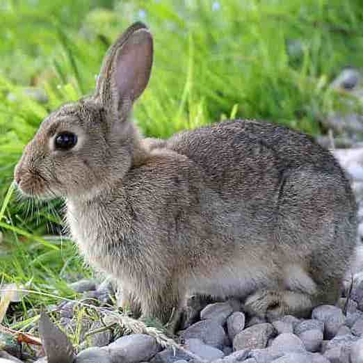

Overview: Rabbits are popular pets because of how cute they are, along with the fact that they bond with their owners and can adjust to living in houses as well as apartments. Rabbits make ideal pets for those who are willing to put in the time and effort it takes to properly care for a rabbit. Many people believe rabbits are low maintenance animals, but the truth is far from that. In order to ensure a rabbit is getting the greatest possible quality of life, the owner must be willing to provide fresh food and water every day, wash salads of leafy vegetables, and search for a veterinarian skilled in rabbit medicine, which are often hard to find. With proper care, your rabbit can live to be older than 10 years old, which many people don't realize. Rabbits require daily monitoring and the same long-term commitment needed to own a dog or a cat.
 Diet & Living Spaces: Rabbits should have a daily diet that consists of mostly hay, some fresh vegetables, and some pellets with fresh water available at all times. The food should be changed every day while your rabbit's water bottle should be cleaned out and replaced with fresh water once a week. Rabbit's digestive systems are very sensitive to changes, so any changes in your rabbit's diet you might want to make, should be done very gradually over a period of time. Rabbits should have an unlimited supply of fresh grass hays every day, such as orchard grass or oat hay. Your rabbit's favorite fresh veggies should be given to them every day in smaller quantities. The best veggies to give your rabbit would be carrot tops, cucumber, bell pepper, and other dark leafy veggies. Some foods to avoid giving your rabbit include, but are not limited to, grains such as chips, crackers, rice, etc., junk food such as cookies and candy, meat, eggs, dairy, nuts, iceberg lettuce, carrots, and corn. Your rabbit's living space is crucial to their quality of life as well. The bigger the cage, the better, but it is also important to note that rabbits are very social creatures and should be treated like an additional member of the family to ensure they get the quality time, affection, and attention they crave from their owners. This means that they would likely be better off indoors to interact with their owner as much as possible. The ideal rabbit cage is large with solid floors, hay bedding, and a large litterbox.
Common Health Issues: One of the most commonly reported diseases in rabbits is uterine cancer in female rabbits. To prevent uterine cancer in rabbits, going to a vet to spay your rabbit is recommended when your rabbit is around 5-6 months old. Because a rabbit's teeth are always growing throughout its life, their teeth can grow large and form spikes that causes pain in your rabbit's mouth and can make eating painful. Once eating is painful for rabbits they will refuse to eat and due from gut issues. Overgrown teeth is a very common issue that owners can combat by providing large quantities of fiber in the form of oat or grass hays so that their rabbit's teeth can always be grinded down. Once a rabbit's teeth start becoming overgrown, the only treatment that can correct the overgrown teeth would be a general anesthetic and burning the teeth down flat.